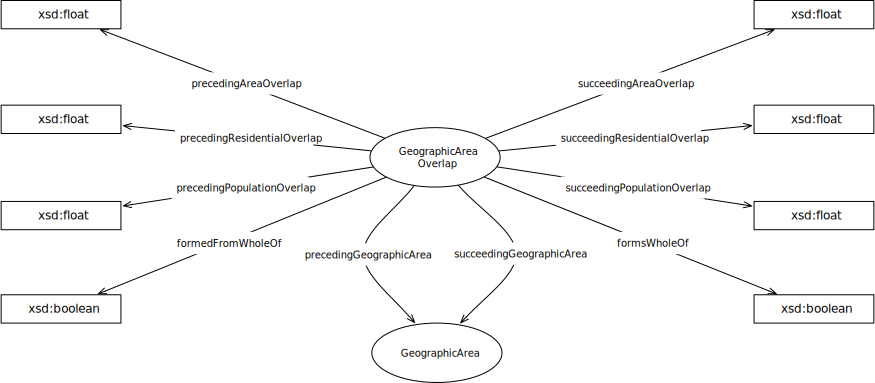

IRI: http://parliament.uk/ontologies/geographic-area-overlap/GeographicArea
IRI: http://parliament.uk/ontologies/geographic-area-overlap/precedingGeographicArea
IRI: http://parliament.uk/ontologies/geographic-area-overlap/succeedingGeographicArea
IRI: http://parliament.uk/ontologies/geographic-area-overlap/formedFromWholeOf
IRI: http://parliament.uk/ontologies/geographic-area-overlap/formsWholeOf
IRI: http://parliament.uk/ontologies/geographic-area-overlap/precedingAreaOverlap
IRI: http://parliament.uk/ontologies/geographic-area-overlap/precedingPopulationOverlap
IRI: http://parliament.uk/ontologies/geographic-area-overlap/precedingResidentialOverlap
IRI: http://parliament.uk/ontologies/geographic-area-overlap/succeedingAreaOverlap
IRI: http://parliament.uk/ontologies/geographic-area-overlap/succeedingPopulationOverlap
IRI: http://parliament.uk/ontologies/geographic-area-overlap/succeedingResidentialOverlap
This HTML document was obtained by processing the OWL ontology source code through LODE, Live OWL Documentation Environment, developed by Silvio Peroni.